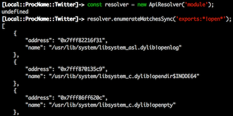

Frida 6.2 Released ∞
release oleavr
oleavr
It’s release o’clock, and this time we’re bringing you massive performance improvements on all platforms, a brand new API for looking up functions, and major stability improvements on iOS 9.
Let’s talk about the latter subject first. Some of you may have noticed weird bugs and deadlocks when using Frida on iOS 9. The root cause was simply that our inline hooking was causing the process to lose the CS_VALID bit of its code-signing status. This was not a problem on iOS 8 and older as jailbreaks were always able to patch the kernel to loosen up on its code-signing requirements. Starting with this release we have implemented some tricks to be able to do inline hooking without breaking the code-signing status. For the technically curious this means that we dynamically generate a .dylib as a temporary file, write out the new versions of the memory pages that we’d like to modify, e.g. the libc memory page containing open(), then pseudo-sign this binary, ask the kernel to F_ADDFILESIGS to it, and finally mmap() from this file on top of the original memory pages.
This brings us to the next topic: performance. The tricks that I just talked about do actually add quite a bit of extra overhead just to hook one single function. It is also a very different approach from what we can do on systems with support for read-write-execute memory-pages and relaxed code-signing requirements, so this obviously meant that major architectural changes were needed. I had also been thinking for a while about being able to apply a whole batch of hooks in one go, allowing us to be more efficient and have more control on exactly when hooks are activated.
Starting with this release, our Interceptor API now supports transactions. Simply call begin_transaction(), hook all the functions, and make them all active in one go by calling end_transaction(). This results in a massive performance boost, and you get all of this for free without any changes to your existing code. This is because we implicitly begin a transaction whenever we’re entering the JavaScript runtime, and end it when we’re leaving it (and just before we send() a message or return from an RPC method). So unless you’re attaching your hooks from timers or asynchronous APIs like Memory.scan(), they will all be batched into a single transaction and get a performance boost.
Here’s how we stack up to CydiaSubstrate in terms of performance:
Note that if you’re using our instrumentation engine from C or C++ you will have to call begin_transaction() and end_transaction() yourself to get this boost, but your code will still work even if you don’t, because every operation will implicitly contain a transaction, and the API allows nesting those calls.
That was function hooking performance, but we didn’t stop there. If you’ve ever used frida-trace to trace Objective-C APIs, or glob for functions across all loaded libraries, you may have noticed that it could take quite a while to resolve all the functions. If you combined this with early instrumentation it could even take so long that we exceeded the system’s launch timeout. All of this has now been optimized, and to give you an idea of the speed-up, a typical Objective-C case that used to take seconds is now completing in a few milliseconds.
Now to the final part of the news. Considering that dynamically discovering functions to hook is such a common use-case, and not just something that frida-trace does, we now have a brand new API for just that:


So in closing, here’s a summary of the changes:
6.2.0:
- core: improve Interceptor to avoid breaking dynamic code-signing on iOS 9
- core: move to a transaction-based Interceptor API for improved performance
- core: fix crash when scheduled callbacks are freed late (V8 and Duktape)
- frida-trace: improve performance by removing setTimeout() logic, allowing many hooks to be applied in the same transaction
- frida-trace: batch log events in 50 ms chunks to improve performance
6.2.1:
- core: add ApiResolver API
- frida-trace: improve performance by using the new ApiResolver API
6.2.2:
- core: fix oops that prevented injection into Windows Store/Universal apps
- core: fix crash on teardown on 32-bit ARM
- core: add frida-inject, a tool to inject an agent into a running process with similar semantics to frida-gadget
- core: (Linux) prevent libdl from unloading to work around TLS destructor bug
- core: (Linux) fix race-condition on rapid uninject
6.2.3:
- core: fix source-map handling for eval code, which manifested itself as unhandled exceptions getting swallowed, e.g. when running frida-trace
- core: fix Python 3.x build system regression
- frida-trace: fix path escaping issue
- frida-trace: improve error-handling for bad handlers
6.2.4:
- frida-trace: monitor handlers instead of polling them
6.2.5:
- core: add support for hooking arbitrary instructions by calling Interceptor.attach() with a function instead of a callbacks object
- core: add support for detaching individual listeners added by Interceptor.attach(), even synchronously from their callbacks
- core: add Memory.scanSync()
- core: fix clobber by improving Interceptor to preserve r12 aka IP on ARM
- core: expose r8 through r12 to the JavaScript runtimes
- core: fix crash on architectures where unaligned word access is not supported
- frida-repl: simplify logic by using the RPC feature
- node: upgrade to prebuild 3.x
6.2.6:
- core: fix regression on non-jailbroken iOS systems
- core: fix Interceptor regression in the Duktape runtime
- core: fix module name of resolved imports
- core: add API for specifying which host to connect to
- core: improve QNX support and fix build regressions
- core: fix the frida-inject build system on Mac
- core: (Windows) fix crash when USB device location retrieval fails
- frida-server: allow overriding the default listen address
- frida-node: add addRemoteDevice() and removeRemoteDevice() to DeviceManager
- frida-python: add -H switch for specifying the host to connect to
- frida-python: add add_remote_device() and remove_remote_device() to DeviceManager
- frida-python: fix compatibility issues with the Duktape runtime
- frida-python: canonicalize the requested RPC method name
Enjoy!